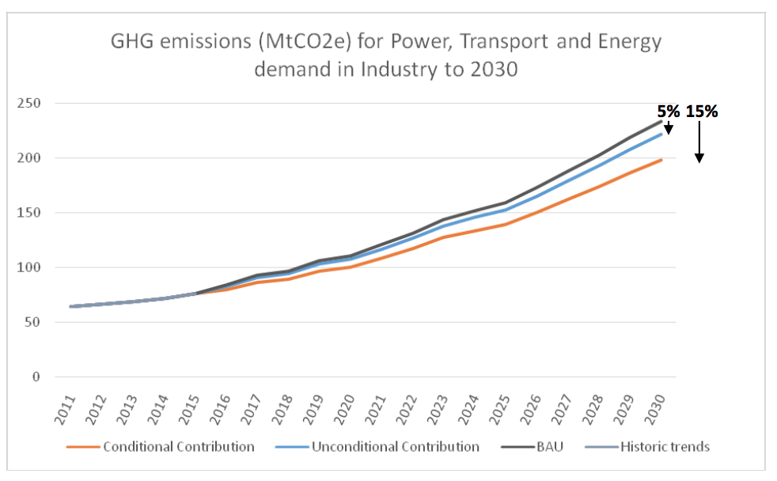

September, 2015
Ministry of Environment and Forests (MOEF)
Government of the People’s Republic of Bangladesh
Bangladesh is a highly climate vulnerable country whose emissions are less than 0.35% of global emissions[1]. Without ambitious action to limit greenhouse gases internationally, the future costs of adapting to climate change will be much higher than they are today. If the world fails to take ambitious action, the costs to Bangladesh of climate change could amount to an annual loss of 2% of GDP by 2050 and 9.4% of GDP by 2100[2]. Bangladesh therefore wants to play its part in the global collective action to reduce future emissions as part of a robust and ambitious international agreement.
Consequently, Bangladesh is adopting a two-fold strategy against climate change. The main focus of Bangladesh’s activities is on increasing our resilience to the impacts of climate change - which are already affecting the livelihoods of much of our population and will continue to do so in the future. For example, extreme temperatures, erratic rainfall, floods, drought, tropical cyclones, rising sea levels, tidal surges, salinity intrusion and ocean acidification are causing serious negative impacts on the lives and livelihoods of millions of people in Bangladesh, and are gradually offsetting the remarkable socio-economic development gained over the past 30 years, as well as jeopardising future economic growth. However at the same time, Bangladesh is also working to achieve lower- carbon as well as more resilient development. With this in mind, this INDC aims to put forth mitigation actions that Bangladesh can take to tackle its growing emissions and to play its role in global efforts to limit temperature rise to two degrees or preferably 1.5 degrees above pre-industrial levels.
With respect to Bangladesh’s contribution to global efforts to counter climate change, this INDC sets out a number of mitigation actions that will help limit the country’s GHG emissions. These mitigation actions will play a key role in realising the move to a low-carbon, climate-resilient economy and to becoming a middle-income country by 2021 whilst ensuring that it will not cross the average per capita emissions of the developing world. The INDC includes both unconditional and conditional emissions reduction goals for the power, transport, and industry sectors, alongside further mitigation actions in other sectors, which Bangladesh intends to carry out. Bangladesh intends to implement its conditional emissions reduction goal subject to appropriate international support in the form of finance, investment, technology development and transfer, and capacity building. The foundation of this INDC is Bangladesh’s existing strategies and plans, in particular the Bangladesh Climate Change Strategy and Action Plan (BCCSAP), Renewable Energy Policy 2008, the Energy Efficiency and Conservation Master Plan (E&CC Master Plan), the forthcoming National Adaptation Plan, the National Sustainable Development Strategy, the Perspective Plan (Vision 2021) and the Sixth (and forthcoming seventh) Five Year Plan, the National Disaster Management Plan and the Disaster Management Act. In addition, it incorporates the outcome of further analysis and consultation to enhance our existing plans, and to analyse future GHG emissions trends and mitigation and adaptation options.
The INDC of Bangladesh consists of the following elements:
Bangladesh reserves the right to revise its intended national target and contribution at any point of time and considers its INDC to be a living document that should be integrated with changed/modified national development goals and targets.
As part of the process of preparing this INDC, Bangladesh has updated its projections of future greenhouse gas emissions including the development of a “Business As Usual” (BAU) scenario and analysis of mitigation potential in three key sectors. Emissions in the “Land use, land-use change and forestry” (LULUCF) sector were not modelled due to difficulties in obtaining the necessary data. Further details of the analysis will be published on the Ministry of Environment and Forests’ website.
Bangladesh’s mitigation contribution covers the power, transport and industry sectors. Under a BAU scenario, GHG emissions in Bangladesh in these sectors are expected to represent 69% of total emissions by 2030 (excluding LULUCF), an increase of 264% by 2030, from 64 MtCO2e in 2011 to 234 MtCO2e in 2030.
The contribution Bangladesh is willing to make is set out below.
Table 1: Intended Nationally Determined Contributions - Mitigation
| Unconditional contribution | Contribution assuming no additional international support | Bangladesh will reduce its GHG emissions in the power, transport, and industry sectors by 12 MtCO2e by 2030 or 5% below BAU emissions for those sectors. |
| Conditional contribution | Contribution assuming additional international support | Bangladesh will reduce its GHG emissions in the power, transport, and industry sectors by 36 MtCO2e by 2030 or 15% below BAU emissions for those sectors. |
These contributions are illustrated graphically below.
Figure 1: Projection of GHG emissions (MtCO2e) on power, transport and industry sectors from 2011 to 2030

The reduction will occur as illustrated in following Table 2.
Table 2: Projected emissions reductions in the power, transport and industry (energy) by 2030
| Sector | Base year (2011) (MtCO2e) | BAU scenario (2030) (MtCO2e) | BAU change from 2011 to 2030 | Unconditional contribution scenario (2030) (MtCO2e) | Change Vs BAU | Conditional contribution scenario (2030) (MtCO2e) | Change Vs BAU |
|---|---|---|---|---|---|---|---|
| Power | 21 | 91 | 336% | 86 | -5% | 75 | -18% |
| Transport | 17 | 37 | 118% | 33 | -9% | 28 | -24% |
| Industry (energy) | 26 | 106 | 300% | 102 | -4% | 95 | -10% |
| TOTAL | 64 | 234 | 264% | 222 | -5% | 198 | -15% |
This contribution is based on analysis carried out throughout 2015 using the best available data. However data quality and availability is an issue in Bangladesh. If new and more robust data comes to light in the future, or if assumptions change (e.g. projections of population or economic growth) the Government will update its analysis accordingly. This will be coordinated with the next update of the BCCSAP and also embedded within the National Communication and Biennial Update Report reporting cycle.
This section sets out some of the mitigation actions that the Government of Bangladesh is currently implementing and examples of the kinds of measures that could be implemented in the future to meet the contributions set out in section 2.2 above.
Bangladesh’s strategy on mitigation is set out in the BBCSAP. This sets out 7 programmes on mitigation:
Table 3: Mitigation programmes from the BCCSAP
| Programme | Objective |
|---|---|
| Improved energy efficiency in production and consumption of energy | Ensure energy secure and low-carbon development of the economy |
| Gas exploration and reservoir management | Enhance energy security and ensure low-emission development |
| Development of coal mines and coal-fired power station(s) | Maximising coal output and managing coal fired power stations in a carbon-neutral way |
| Renewable energy development | Maximising the use of renewable energy sources to lower GHG emission and ensuring energy security |
| Lower emissions from agricultural land | Raise productivity of agricultural land and lower emissions of methane |
| Management of urban waste | Ensure liveable cities while lowering GHG (methane) emissions |
| Afforestation and reforestation programme | Provide support to scale up afforestation and reforestation |
Bangladesh already has a number of activities and targets that are driving action to reduce GHG emissions, and that will help it meet the unconditional contribution set out in section 2.2, including:
Bangladesh will also need to implement additional mitigation actions in order to meet the conditional contribution set out in section 2.2. Examples of these are set out in Table 4. More analysis will be taken in future to consider these options in more detail, based on the availability of funding support and internal capability, including as part of a proposed INDC implementation roadmap (see section 4), before decisions are taken.
Table 4: Possible mitigation actions to deliver the conditional contribution
| Sector | Description | Objectives of the activity by 2030 |
|---|---|---|
| Power |
|
|
| Transport |
|
|
| Industry (energy-related) |
|
|
As explained above, sectors other than power, transport, and industry were not included in the quantified contributions as a robust data-set is not as readily available for these other sectors, making quantification of mitigation potential more challenging. Yet, Bangladesh will carry out more work in future, under the umbrella of the BCCSAP, to improve analysis in other sectors. And Bangladesh will also continue to consider mitigation actions in these sectors, despite their contribution currently not being quantified in the INDC. Examples of potential measures in other sectors are set out below:
Table 5: Possible conditional action-based contributions
| Sector | Description | Objectives of the activity by 2030 |
|---|---|---|
| Households |
|
|
| Commercial buildings |
|
|
| Agriculture (non-energy related) |
|
|
| Waste |
|
|
| Land use, land use change and forestry |
|
|
This section provides more detail on the contributions set out in section 2.2 and the analysis that was carried out to inform them.
Table 6: Information to facilitate clarity, transparency and understanding
| Time frames and/or periods for implementation | |
| Timeframe for implementation | The timeframe for implementation of the INDC is 2020-2030 |
| Scope and coverage | |
| Scope of gases included in the contribution | Carbon dioxide (CO2), methane (CH4), nitrous oxide (N2O), hydrofluorocarbons (HFCs), perfluorocarbons (PFCs) and Sulphur Hexafluoride (SF6). |
| Sectors covered by the contribution | The contribution covers the power sector, and energy use in the transport and industry sectors. Other sectors are not included in the quantified contribution, but are included as action-based conditional contributions. |
| Geographies covered by the contribution | The contribution covers all of Bangladesh. |
| Assumptions and methodological approaches | |
| Methodology for estimating current and future emissions | The IPCC Revised 1996 Guidelines for National Greenhouse Gas Inventories and the Good Practise Guidance and Uncertainty Management in National Greenhouse Gas Inventories were used to calculate current and future GHG emissions. GHG projections were developed to be consistent with Bangladesh’s aim of becoming a middle-income country by 2021. The exact approach to estimating GHG emissions was tailored for each sector according to the availability of data. For example, GHG emissions from road transport were calculated in a relatively disaggregated manner, by combining data on numbers of vehicles, distances travelled and the fuel efficiencies of the vehicles. Similarly, GHG emissions from electricity use in households were calculated in a detailed bottom-up manner, using data on projected numbers of electrical appliances and their efficiencies. On the other hand, GHG emissions from industry were calculated using aggregated energy demand data per industrial sub-sector and forecasts of future industrial output. Future emissions were modelled using the LEAP model, with emissions being calculated from the relevant activity data and emissions factors. |
| Global warming potentials | The carbon dioxide equivalent has been calculated using the 100 year global warming potentials in accordance with the Revised IPCC 1996 Guidelines. |
| Approach for land-based emissions | Data was not available to allow for detailed analysis of future GHG emissions and mitigation potential in the LULUCF sector. Further work will be needed to quantify this accurately (see section 4 on INDC implementation). |
| Synergies and co - benefits | The shortlist of mitigation options analysed for the INDC was created from a longer list by applying certain criteria, one of which was co-benefits. All the measures are expected to therefore have some co-benefits. These include improved air quality (e.g. from increased renewables or reduction in traffic congestion), improved road safety (from modal shift to public transport and reduced traffic congestion), economic benefits from developing green jobs, cost savings to families (e.g. from lower running costs of cars and from energy efficient appliances) and improved access to energy (e.g. from localised biogas production). For more information on mitigation-adaptation synergies, see section 3. |
| Net contribution of International Market Based Mechanism | Bangladesh does not rule out the use of international market- based mechanisms in line with agreed modalities and accounting rules. |
Bangladesh is a Least Developed Country (LDC) whose emissions are less than 0.35% of global emissions. However, Bangladesh recognises that in order to meet the 2 degrees objective all countries will need to undertake mitigation in line with the IPCC conclusion that meeting 2 degrees requires global reductions to reduce by 40 to 70% global anthropogenic GHG emissions reductions by 2050 compared to 2010. Bangladesh’s approach is driven by the long-term goal announced by its Prime Minister that its per capita GHG emissions will not exceed the average for developing countries. Therefore, Bangladesh’s approach focuses on putting itself on a pathway which will avoid an increase of emissions per capita beyond this level, while pursuing national development goals.
Despite its current status as a LDC and its currently small share of past and current global GHGs, Bangladesh is still putting forward actions which will allow the country to embark on a low carbon development pathway, keeping in mind the global climate change agenda. This INDC represents the first time that Bangladesh has made an international undertaking to take action on mitigation and therefore fulfils the requirements of the Lima Call for Climate Action to go beyond existing efforts. The actions needed to deliver on these commitments will require international support in the form of finance, technology transfer and capacity building. Bangladesh will also provide a relevant contribution with regards to national financial resources, staff time and strong integration of development and mitigation activities.
In selecting the actions set out above, Bangladesh has prioritised those which fit with the growth priorities set out in our national development plans. In addition, Bangladesh has captured the synergies between mitigation and adaptation, not only by prioritising those adaptation activities with significant mitigation co-benefits, but also by seeking to minimise the carbon footprint of adaptation portfolio as a whole. The INDC contains a mix of measures that have already been taken forward under its own resources, thus demonstrating that Bangladesh is not content to wait for international support to take action on climate change.
Bangladesh, one of the world’s most disaster-prone climate vulnerable countries, has faced dozens of major disasters over its short history as a nation. Located on the Bay of Bengal, Bangladesh is particularly susceptible to seasonal cyclones, acting as a funnel for heavy precipitation from the Indian Ocean and creating extreme weather events. The country sits on the flood plain of several major rivers, which drain from the mountainous regions of the Himalayas, making seasonal flooding another hazard often coinciding with the cyclone season. Current research and studies suggest that flood, tropical cyclones, storm surge and drought are likely to be more frequent and severe in the years to come. The Climate Change Vulnerability Index (CCVI-2011) calculated the vulnerability of 170 countries to the impacts of climate change over the next 30 years[3], which reveals that Bangladesh is the most vulnerable country to climate change.
Climate change adaptation is a key priority and the country has already undertaken initiatives to mainstream adaptation into national development such as in the water, health, forestry, agriculture and more prominently in the infrastructure sectors. Bangladesh is already experiencing a host of climate impacts, including floods, storm surges, drought and river bank erosion. For example, floods in 2007 inundated 32,000 sq. km, leading to over 85,000 houses being destroyed and almost 1 million damaged, with approximately 1.2 million acres of crops destroyed or partially damaged, 649 deaths and estimated damage over $1 billion. Climate change will drastically hamper economic growth of the country. For instance, the Asian Development Bank estimated that Bangladesh may experience a 2% GDP annual loss by 2050 because of climate change.
The primary goal for adaptation is to protect the population, enhance their adaptive capacity and livelihood options, and to protect the overall development of the country in its stride for economic progress and wellbeing of the people.
Over the last three decades, the Government of Bangladesh has invested over $10 billion (at constant 2007 prices) to make the country more climate resilient and less vulnerable to natural disasters. Flood management embankments, coastal polders and cyclone shelters have been built, and important lessons learnt on how to implement such projects successfully in the dynamic hydrological conditions of Bangladesh and with active participation of communities.
To enhance climate change adaptation activities in all key policies and sectors, Bangladesh has recently established two innovative funds: the Bangladesh Climate Change Trust Fund (BCCTF) from the Government’s own budget and the Bangladesh Climate Change Resilient Fund (BCCRF) with the support of development partners. Bangladesh submitted the National Adaptation Programme of Action (NAPA) in 2005 (revised in 2009) and prepared a climate change action plan (the Bangladesh Climate Change Strategy and Action Plan in 2009).
Considering the vulnerabilities, the government has identified the following areas of interventions to address adverse impacts of climate change:
Key Areas to address adverse impacts of climate change
Based on the above-mentioned areas the following broad adaptation actions are prioritized for the country:
Adaptation Priorities for Bangladesh
Bangladesh has already developed considerable infrastructure and capability to address these climate change-induced vulnerabilities through disaster risk management and climate change adaptation. In order to accelerate the present domestic initiatives to adapt to climate change and secure lives and livelihoods of people, the Government has allocated nearly $ 400 million to Bangladesh Climate Change Trust Fund (BCCTF). As of June 2015 BCCTF has funded over 236 projects of which 41 have already been implemented. The projects undertaken so far from BCCTF include:
Please see details on the country’s achievement in the field of climate change adaptation in Annex 1
A significant number of development programmes are implemented under the revenue budget, and the allocation for BCCTF also comes from the revenue budget (FY-2013/14), so the total allocation to development activities amounts to about 32 percent of the national budget. An updated BCCTF project list is provided on the Fund’s website[4].
A good number of climate change adaptation projects have been further developed for implementation by different ministries and departments like Local Government Engineering Department (LGED), Water Development Board, Bangladesh Inland Water Transport Authority (BIWTA), Ministry of Disaster Management, Road and Transport Highways Division, Ministry of Road Transport and Bridges. Please see the detailed project list in Annex 1.
Furthermore, Bangladesh has prepared a roadmap towards formulating a comprehensive National Adaptation plan (NAP) with a view to reducing vulnerability to the impacts of climate change by building adaptive capacity and resilience. The NAP is expected to facilitate the integration of climate change adaptation into relevant new and existing policies, programmes and activities in a coherent manner, in particular development planning processes and strategies, within all relevant sectors and at different levels, as appropriate.
Bangladesh is considered one of the leading countries in managing disasters, and many good lessons and practices gathered over the years are being replicated in the context of CCA.
Bangladesh acknowledges that climate change action requires a holistic approach and further acknowledges that many activities will deliver both adaptation and mitigation benefits. For example, Bangladesh’s national afforestation programme has led to significant afforestation in newly accreted lands along the coast in the Bay of Bengal as well as reforestation in the adjacent denuded hills. About 195,000 hectares of mangrove plantations have been raised so far and these new plantations are also playing an important role in carbon sequestration. More analysis needs to be carried out on future GHG emissions and mitigation options for the LULUCF sector and when this is done, further consideration will be given to mitigation-adaptation synergies in this sector.
Needless to mention, domestic/national initiatives to address climate change vulnerabilities from our own resources are far from inadequate compared to what is required to address vulnerabilities of 160 million of the national population. Resources are required from international mechanisms to ensure climate resilient development of the country. This will assist in developing a comprehensive programme for adaptation and the NAP will form the core element of this progamme.
Bangladesh acknowledges that monitoring and evaluation of adaptation policies and programmes is crucial to ensure that resources are well utilized to increase the overall resilience of our people. The objective is to mainstream adaptation initiatives in a National Monitoring, Reporting and Verification (MRV) system that is being planned.
This INDC has been prepared through consultation and dialogue with the Government’s Advisory and Technical Committees, which include a range of stakeholders including line ministries, Planning Commission, technical departments, professionals, experts, and the private sector.
With obvious reason the INDC implementation will be carried forward under the framework of updated and meaningful implementation of the Bangladesh Climate Change Strategy and Action Plan (BCCSAP) and other key policies/plans. The BCCSAP is a ten-year programme running from 2009 to 2018, to build the capacity and resilience of the country to meet the challenge of climate change. An INDC implementation roadmap will be produced in 2016. This will review the current situation with respect to implementation of the BCCSAP, identify gaps and support needs, review barriers to implementation and present proposals for INDC implementation next steps.
Specific activities to be carried out in the development of the INDC implementation roadmap include:
INDC implementation will be taken forward by existing governance arrangements under the BCCSAP, with coordination being managed by the climate change secretariat in the Ministry of Environment and Forests, reporting to the Advisory Committee and the National Environment Committee (chaired by the Prime Minister). Specific implementation activities will be carried out by the appropriate line ministries and agencies with fiscal support under the fiscal framework of the Government. A comprehensive and robust INDC implementation framework will be developed in line with the existing CFF and other climate change related bodies.
Significant resources will be needed to support the implementation of Bangladesh’s INDC, including finance, technology transfer and capacity building support. This section gives examples of the kinds of costs facing Bangladesh, both for adaptation and mitigation, and a brief summary of the existing institutional frameworks on climate finance.
Being amongst the countries worst affected by climate change, much of the required resource will be focused on adaptation and improving climate resilience. The BCCSAP sets out the type of investments needed to address climate impacts, early warning systems, improved irrigation and water management, improved operation and maintenance and upgrading of coastal embankments and polders and upgrading of flood protection embankments/drainage systems[5].
It was estimated by the World Bank[6] in 2010 that by 2050, adaptation costs of tropical cyclones and storm surges will be $5516[7] million and the annual recurrent cost will be $112 million, whereas for inland monsoon flooding the cost will be $2671 million and the annual recurrent cost will be $54 million. Just taking these two sectors into consideration, the cost is estimated to be around $6.59 billion by 2030.
Bangladesh has already implemented some key adaptation activities as urgent and immediate needs of the country. Implementation of identified adaptation measures are very critical to increase the resilience of the country to climate change. It was estimated that Bangladesh will need to invest $40 billion from 2015 to 2030 in order to implement identified adaptation measures (detail in section 3) to address adverse impacts of climate change. This figure includes the actions included in the NAPA, BCCSAP as well as new adaptation needs for the period 2015-2030 based on the current NAP Roadmap and the 7th Five Year Plan. Some examples of specific adaptation-related costs are set out below:
Table 7: Estimated costs of key adaptation measures
| Adaptation measure | Estimated investment required (billion USD, 2015-2030) |
|---|---|
| Food security and livelihood and health protection (incl. water security) | 8 |
| Comprehensive disaster management | 10 |
| Salinity intrusion and coastal protection | 3 |
| River flood and erosion protection | 6 |
| Building climate resilient infrastructure | 5 |
| Rural electrification | 3 |
| Urban resilience | 3 |
| Ecosystem based adaptation (incl. forestry co-management) | 2.5 |
| Community based conservation of wetlands and coastal areas | 1 |
| Policy and institutional capacity building | 0.5 |
Further work will be needed to assess the scale and scope of investment needs for mitigation activities (see section 4 on INDC implementation). But examples of the kinds of investment required (2011-2030) to implement key mitigation measures are set out below:
Table 8: Estimated costs of key mitigation measures
| Mitigation measure | Estimated investment required (billion USD, 2011-2030) |
|---|---|
| Switching to 100% super-critical coal power generation | 16.5 |
| Developing utility-scale solar energy | 1.3 |
| Scaling up wind energy | 0.6 |
| Repowering steam turbine with CCGT | 0.63 |
| Expanding the Solar Homes Programme | 1.2 |
| Other solar | |
| Solar Irrigations Pumps | 0.6 |
| Solar Mini-grids | 0.25 |
| Solar Nano-grids | 0.27 |
| Pico-solar | 0.1 |
| Scaling up biomass production from sugar | 0.2 |
| Building an Elevated Express Highways in Dhaka for decongestion of the main urban traffic arteries | 2.65 |
| Dhaka mass rapid transit system | 2.7 |
This is expected to ensure better synergy among financing intermediaries to leverage investments that are greater than the sum of their parts. Effective access to international climate finances is critical for implementation of the Bangladesh INDC to address adverse impacts of climate change for sustaining economic growth and thereby aiding to achieve middle-income country status by 2021.
List of adaptation projects
LGED:
Haor Infrastructure and livelihood Improvement Project (HILIP) including Climate Adaptation and Livelihood Protection (CALIP) - http://www.lged.gov.bd/ProjectHome.aspx?projectID=274
Emergency 2007 Cyclone Recovery and Restoration Project (ECRRP), LGED Part - http://www.lged.gov.bd/ProjectHome.aspx?projectID=33
Bangladesh Water Development Board (BWDB):
http://www.bwdb.gov.bd/index.php?option=com_content&view=article&id=133&Itemid=120
Bangladesh Inland Water Transport Authority (BIWTA):
http://www.biwta.gov.bd/website/?page_id=9
Road and Transport Highways Division, Ministry of Road Transport and Bridges:
The list of projects is divided into three sections.
Bangladesh Climate Change Trust:
http://www.bcct.gov.bd/images/180814/Updated Project List 17.11.pdf
Climate Analysis Indicators Tool (CAIT) Version 2.0. (Washington, DC: World Resources Institute, 2014)". World Resources Institute ↩
http://www.adb.org/news/bangladesh-could-see-climate-change-losses-reach-over-9-gdp-report ↩
http://www.bcct.gov.bd/images/180814/Updated Project List 17.11.pdf ↩
See box 7 of the BCCSAP. ↩
World Bank. 2010. Main report. Washington, DC: World Bank. http://documents.worldbank.org/curated/en/2010/01/16420806/bangladesh-economic-adaptation-climate-change-vol-1-2-main-report ↩
$ signifies USD throughout the document ↩